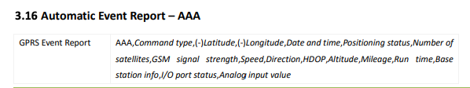
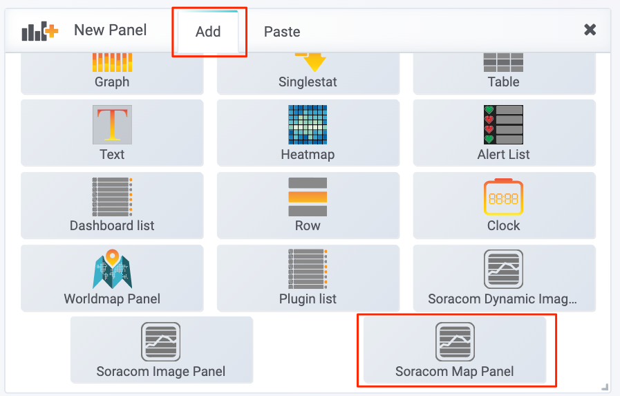
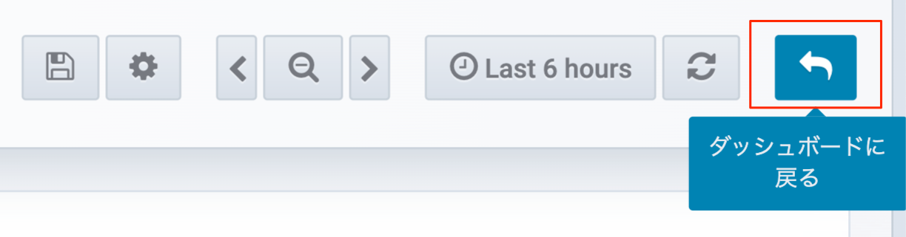
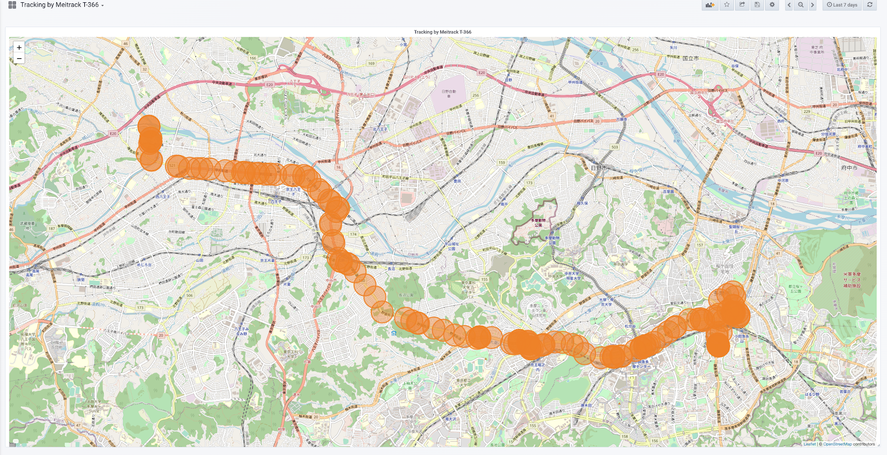

公開日: 2020年7月
レシピ難易度：★★★★★

社用車や作業車、貨物車両など管理車両を保有する企業では、位置情報や経路情報の把握、稼働率の向上、最適なタイミングでの業務連絡をしたいといった多様な課題が発生します。
本レシピでは、IoTテクノロジーを使ってこれらの課題を自ら解決するための仕組みについて情報提供します。
日本のみならず世界の顧客と多数のIoTプロジェクトを成功に導いているソラコムが選定した、シガーソケットを利用して手軽に設置可能なGPSトラッカーとデータ通信用のSORACOM IoT SIMをセットにした<シガーソケットGPSトラッカー RT299 スターターキット>を使って車両の位置情報を管理する仕組みを作っていきます。最終的にはGPSトラッカーから送信される位置情報をもとに地図上に現在地やその軌跡をWeb上で確認できるダッシュボードを作成していきます。
位置情報の取得にはRT299、位置情報の保存及び可視化にはIoTに特化したデータ蓄積サービス SORACOM Harvest、IoTデータの簡易的なダッシュボードサービス SORACOM Lagoonを活用します。またRT299からの位置情報データをWebで可視化するためにはデータの加工が必要となりますので、本レシピではデータ加工処理にSORACOM Orbitの機能利用します。
SORACOM Orbit の機能を使うためには、プログラミングの基礎知識が必要になりますが、RT299にはすでに利用可能な公式プログラムが提供されておりますので、本レシピの内容においてはプログラミングの作業は不要となります。
全体構成
利用するソラコムサービス
サービス名 | 概要 |
IoT 通信データの処理を定義することを可能とするサービスです。RT299からのデータをSORACOM Harvestへ連携するための前処理として利用します。 | |
データ収集・蓄積サービスです。 位置情報の保存先として利用します。 | |
ダッシュボード作成・共有サービスです。 SORACOM Harvestに保存した位置情報を使ったダッシュボードを作成するために利用します。 |
本レシピを行うのに必要な時間、概算費用
本レシピは以下の通りです。
- 必要な時間: 約2時間
- 概算費用: 約21,000円
※ デバイスを車両へ設置するために要する作業時間及びそのために必要となる工具類の費用を含みません。
※ 概算費用: ハードウェアや SORACOM を始めとした各種サービスの概ねの費用 (税や送料などの付帯費用や無料枠適用は考慮しないものとしています)
デバイス
品名 | 数量 | 価格 | 購入先 | 備考 |
車載GPSトラッカー RT299 スターターキット | 1 | 19,800円 | ー |
その他必要なもの
必要なもの | 費用 | 作成方法など |
SORACOM アカウント | 無料※ |
※ アカウント作成・維持の費用の料金です。
本レシピで利用するシガーソケットGPSトラッカー RT299 スターターキットは防水防塵のIP防護レベルがIP67と耐環境性に優れたGPSトラッカーです。そのため車、バイク、ヨット、船といった過酷な環境下でも利用が可能です。また3軸加速度計を搭載しており、デバイス単体で振動でデバイスをウェイクアップしたり、牽引警報、急加速警報、急ブレーキ警報を検知することができます。
本レシピではIoTストアで提供されているRT299の標準設定を用いて位置情報を連携していきます。専用の設定ツールを利用することで位置情報の送信頻度の変更や、SMSによる遠隔での設定変更などが可能です。これら本レシピでは扱わない範囲の機能詳細については下記関連リンクをご参考ください。
関連リンク一覧
以下のステップで実装を進めていきます。
ステップ | 概要 |
SORACOM Harvest Dataの設定 | 位置情報を利用するためのSORACOM Harvest Dataの設定をおこないます。 |
SORACOM Lagoonの設定 | SORACOM Harvest Dataに蓄積したデータを可視化するためのSORACOM Lagoonの利用設定をおこないます。 |
デバイスキッティング | RT299にSIMをセットし事前の動作確認を行います。 |
データ加工処理の作成 | RT299より連携されるデータを可視化するためにデータを加工しSORACOM Harvest Dataへ書き込みます。SORACOM Orbitによりデータの加工処理をおこない、その後のSORACOM Harvest Dataへデータの書き込みをおこないます。 |
位置情報ダッシュボードの作成 | SORACOM Harvest Dataへ保存された位置情報をもとにSORACOM Lagoonでトラッキングするためのダッシュボードを作成します。地図上に位置情報をマッピングしていきます。 |
SORACOM の IoT データ収集・蓄積サービス SORACOM Harvest Data を利用して、データの可視化を簡単に実現してみましょう。
まずはグループの作成と、作成したグループへ SIM を所属させる事から始めます。
SORACOM ユーザーコンソールにログインした後［Menu］>［SIM 管理］とクリックして SIM 管理画面を開きます。

SORACOM Harvest Data でデータの収集を行いたい SIMにチェックを付け、［操作］>［所属グループ変更］とクリックします。

「新しい所属グループ」のプルダウンボックスをクリックした後、［新しいグループを作成...］をクリックします。

「グループ作成」のグループ名を入力して［グループ作成］をクリックします。
項目 | 例 | 備考 |
グループ名 |
| 自由に入力可能です。日本語も設定可能です。 |
新しい所属グループが先ほど作成したグループになっていることを確認したら［グループ変更］をクリックします。
自動的に SIM 管理画面に戻ります。
SIM の「グループ」に先ほど作ったグループが設定されていることを確認してください。
以上で、グループの作成と所属の作業は完了です。
SIM 管理画面から、利用するSIMに割り当てたグループ名をクリックします。
［基本設定］ >［SORACOM Harvest 設定］をクリックして設定ができるように開きます。
先ほどの設定を行ったページ内にあります。
「SORACOM Harvest 設定」で以下のように設定します。
項目 | 設定値 | 備考 |
（スイッチ） | ON | ― |
スイッチはクリックすることで OFF から ON に切り替えることができます。

最後に［保存］をクリックしてください。
その後表示される「SORACOM Harvest が有効になっています」のダイアログでは［OK］をクリックしてください。
以上で「SORACOM Harvest Data」の設定が完了しました。
SORACOM Lagoon を有効化していきます。
SORACOM Lagoon 用語解説
ここで SORACOM Lagoon で使われる用語を解説します。
用語 | 意味 |
プラン | SORACOM Lagoon の契約プランです。機能と料金が異なります。SORACOM Lagoon のご利用料金に機能や料金の比較表があります。 |
メトリクス (メトリック) | データが格納されている先です。SORACOM Lagoon では以下の4つの中から選び、その中からノード(SIMや回線)を選択します。
|
データソース | メトリクスの参照先です。SORACOM Lagoon では "Harvest" (= SORACOM Harvest) を選ぶとメトリクスが展開されます。 Grafana ではテスト用のランダムデータが表示されます。 |
パネル | パネルはデータを表示する領域です。データソースとメトリクスを指定すると、そのメトリクス(たとえばSIM)のデータをパネルで使えるようになります。 様々なパネルが存在します。 |
ダッシュボード | 複数のパネルを束ねて「1枚の画面」にしたものがダッシュボードです。共有の単位となります。 |
SORACOM Lagoon ユーザー (Lagoon ユーザー) | SORACOM Lagoon へログインするためのユーザー(IDとパスワードの組) SORACOM ユーザコンソールへのログインとは異なるユーザ一覧となり、皆さん自身で登録・削除が可能です。ダッシュボードやパネルを編集できる「編集可能」と表示専用の「読み取り」の2段階の権限を設定できます。 作成可能数はプランによります。 |
データリフレッシュ | SORACOM Harvest から SORACOM Lagoon へデータが反映される事、もしくは反映タイミングとなります。反映タイミングはプランによります。 |
アラート | メトリクスのデータに対して条件を設定し、その条件を満たしたら通知を行う仕組みの事です。 |
SORACOM ユーザーコンソールの［Menu］>［データ収集・蓄積・可視化］>［SORACOM Lagoon］とクリックします。

［SORACOM Lagoon の利用を開始する］をクリックします。

プランのうち［Free］を選択したあと［続行する］をクリックします。

SORACOM Lagoon ユーザーの初期ユーザーに設定するパスワードを入力した後、［利用開始］をクリックします。

SORACOM Lagoon の有効化に成功すると、以下のように SORACOM Lagoon コンソールへのリンクと、Lagoon ユーザーの一覧が管理できるようになります。
この画面を SORACOM Lagoon 管理画面と呼びます。

SORACOM Lagoon 管理画面は、SORACOM Lagoon が有効化されている間は ［Menu］>［データ収集・蓄積・可視化］>［SORACOM Lagoon］で表示する事ができます。
SORACOM Lagoon 管理画面を表示したあと、［SORACOM Lagoon console にアクセス］をクリックします。
※ SORACOM Lagoon 管理画面は ［Menu］>［データ収集・蓄積・可視化］>［SORACOM Lagoon］で表示する事ができます。

SORACOM Lagoon へログインします。
メールアドレス (SORACOM ユーザコンソールへログインする際のメールアドレス) と、SORACOM Lagoon 初期ユーザ作成時に利用したパスワードでログインします。

ログインに成功すると、以下のような画面が表示されれば設定完了です。
IoTストアにて提供していますRT299は標準設定としてソラコムを利用するためのAPNの設定、データの送信先にSORACOM Unified Endpointが設定されています。そのためSIMを挿し電源を入れるだけでUnfied Endpointへ位置情報の送信が開始されます。
RT299の側面にSIMを入れるスロットがあります。

スロットのフタを開け、下記画像のようにSIMの向きを揃えてスロットにSIMを挿入してください。
次に動作確認を進めていきます。下記の手順にそってRT299より送信された位置情報を含むデータがSORACOM Harvestに連携されていることを確認してください。
［Menu］>［SIM 管理］とクリックして SIM 管理画面を開きます。
SORACOM Harvest Data でデータの収集を行いたい SIM にチェックを付け、［操作］>［データを確認］とクリックします。

表示された画面で［自動更新］を ON にします。RT299からデータが送信されていると下記のようにデータを確認できます。

本レシピでは車両の位置情報をトラッキングするために必要となる緯度経度の情報のみを抽出しSORACOM Harvestへ連携することとします。
データ処理のためにSORACOM Orbitを利用します。
具体的な実装の前にRT299より連携されるデータの中身についてみていきましょう。
RT299の電源をいれると以下のようなフォーマットのデータにより位置情報の連携が行われます。
$$L169,864507031094047,AAA,35,35.633425,139.446113,200329124259,A,9,21,0,37,0.9,76,3158925,283164,440|10|0043|04820228,0000,0000|0000|0000|01A9|0587,00000001,,3,,,565,272*91
各項目の詳細については下記Protocolガイドをご参照ください。
上記ドキュメントによると AAAの後ろに続く2項目35.633425,139.446113が緯度、経度となるためこの2項目を抽出します。

SORACOM Orbitで開発をするためには事前に開発者ドキュメントに従い、開発環境のセットアップが必要です。しかし、本レシピでは販売元のリアルタイムシステムズ様よりRT299でそのまま使える公式プログラム(WASM)を用意していいただいておりますので、こちらのプログラムを前提にレシピを進めていきます。
また本レシピでは開発言語として AssemblyScript を利用します。
プログラムのダウンロード
こちらのリンクよりダウンロードを行って下さい。プログラムの詳細はCloudGPSのWebページに記載がございます。
ダウンロードが完了したらzipを解凍します。
Soraletの作成/WASMモジュールのアップロード
SORACOM Orbit で使用する WASM モジュールをアップロードするために、その入れ物である Soralet (ソラレット) を作成します。本レシピではSORACOM CLIをもとに作成を進めます。
vscodeのterminalにて下記コマンドを実行しSoraletを新規に作成します。Soraletを識別するためのSoralet IDは iot-recipe-soralet とします。
$ soracom soralets create --soralet-id iot-recipe-soralet次にSoraletが作成されたことを確認します。
soracom soralets get --soralet-id iot-recipe-soralet
{
"createdTime": 1592491058519,
"description": "",
"operatorId": "OP0000000000",
"soraletId": "iot-recipe-soralet",
"updatedTime": 1592491058519
}作成したSoraletへ先ほどダウンロードしたWASMモジュールをアップロードします。まずコマンドラインを操作して、ダウンロードしたbuildディレクトリに移動します。ディレクトリにsoralet-optimized.wasmが存在していることを確認して下さい。--body にsoralet-optimized.wasmを指定してします。同じ Soralet に対して複数回 WASM モジュールをアップロードすると srn (SORACOM Resource Name。以下SRN) の version (バージョン番号) 部分がインクリメントされていきます。SORACOM Orbitでは利用するWASMモジュールをSRNとバージョン番号を指定して設定します。
$ soracom soralets upload --soralet-id iot-recipe-soralet \
--content-type application/octet-stream \
--body @soralet-optimized.wasm
{
"createdTime": 1594632153993,
"hash": "fc4a493b6926e3ba8a9ef7c5f02ea11c2a4e6f69029cc110f9a1011f09a47as2b495a1a2fab197fd2d98be5366985cc442d0aeb12623ac7e39de63cg4c0f399",
"operatorId": "OP0000000000",
"size": 10812,
"soraletId": "iot-recipe-soralet",
"srn": "srn:soracom:OP0000000000:jp:Soralet:iot-recipe-soralet/1",
"version": 1
}
SORACOMグループでのSORACOM Orbit有効化
次にソラコムコンソールよりSORACOMグループに対してSORACOM Orbitを有効化します。
SIM 管理画面から、利用するSIMに割り当てたグループ名をクリックします。
［基本設定］ >［SORACOM Orbit 設定］をクリックして設定ができるように開きます。
設定をONにし、CODE SRNに作成したSoraletのSRNを指定してください。 CONTENT TYPEに application/octet-stream を選択し、DIRECTIONのuplinkにチェックをいれ保存してください。
WASMモジュールの動作確認
それでは動作確認を進めていきます。SORACOM OrbitではWASMモジュールの動作確認をSORACOMプラットフォーム上でも行うことができます。この機能を利用することで、実際のデバイスを使ったテストの前にWASMモジュールの動作確認が可能です。
まずSORACOM Orbitにインプットとなるテストデータを準備します。test.json というファイルを作成し下記のテストデータを記述してください。payload にデバイスから送信されるデータを記述します。
{
"source": {
"resourceType": "Subscriber",
"resourceId": "1111111111"
},
"payload": "$$L169,864507031094047,AAA,35,35.633425,139.446113,200329124259,A,9,21,0,37,0.9,76,3158925,283164,440|10|0043|04820228,0000,0000|0000|0000|01A9|0587,00000001,,3,,,565,272*91"
}下記コマンドを実行することで先ほど準備したテストデータをもとにWASMモジュールの動作確認を行うことができます。--version には動作確認対象WASMモジュールのバージョン番号を指定してください。--body には先程作成したテストファイルを指定してください。
実行に成功するとWASMモジュールでの変換後の出力データが --body に表示されます。
$ soracom soralets exec --soralet-id iot-recipe-soralet \
--version 1 \
--direction uplink \
--content-type text/plain \
--body @test.json
{
"body": "{\"lat\":35.633425,\"lon\":139.446113}",
"contentType": "application/json",
"encodingType": "plain",
"resultCode": 0
}またAssemblyScript内でlog関数により出力した内容は下記コマンドで確認することができます。
$ soracom soralets get-logs --soralet-id iot-recipe-soralet
[
{
"createdTime": 1594350731160,
"message": "{\"lat\":35.633425,\"lon\":139.446113}",
"operatorId": "OP0000000000",
"soraletId": "iot-recipe-soralet",
"version": 1
}
]
RT299の電源を投入してください。SORACOM Orbitにより整形されたデータがSORACOM Harvest Dataに書き込まれていることを確認します。
［Menu］>［SIM 管理］とクリックして SIM 管理画面を開きます。
SORACOM Harvest Data でデータの収集を行いたい SIM にチェックを付け、［操作］>［データを確認］とクリックします。
下記のようにデータが連携されていることを確認してください。
次にSORACOM Harvest Dataに蓄積された位置情報をSORACOM Lagoonを用いてダッシュボードを作成していきます。
SORACOM ユーザーコンソールの［Menu］>［データ収集・蓄積・可視化］>［SORACOM Lagoon］とクリックします。
[SORACOM Lagoon consoleにアクセス］ をクリックします。
SORACOM Lagoon へのログイン画面が表示されるので本レシピで作成したユーザー/パスワード情報を入力します。
SORACOM Lagoonのホーム画面左にある［+］をクリックし［ダッシュボード］をクリックします。
表示されているパネルから［Add］>［Soracom Map Panel］を選択してください。

作成されたパネルのタイトル部分をクリックし、［編集］をクリックします。
Airを選択 > 対象のSIMを選択します。SORACOM Harvestに投入する際に加工したJSONデータのキー(lat, lon)を以下のように設定してください。
画面右上にある［ダッシュボードに戻る］をクリックします。

設定が完了すると下記のように位置情報を地図にマッピングされたパネルが表示されます。

また先程のパネル編集画面よりマップオプションより移動の軌跡を表示させたり、アニメーションを付けることも可能です。
［マップオプション］ > ［クエリAオプション］ > ［軌跡を表示］と［アニメーション］を有効にすると位置情報の軌跡を描けます。
作成したダッシュボードを保存していきます。画面右上の［ダッシュボードを保存］をクリックします。
ダッシュボードに任意の名前をつけて、［保存］をクリックします。

以上でダッシュボードの作成は完了です。